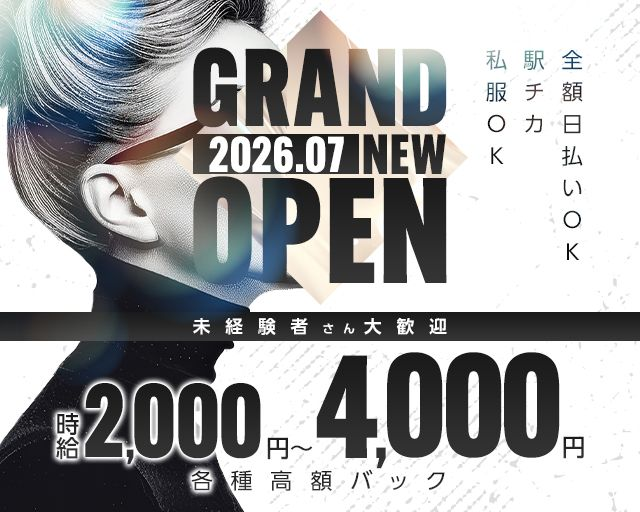
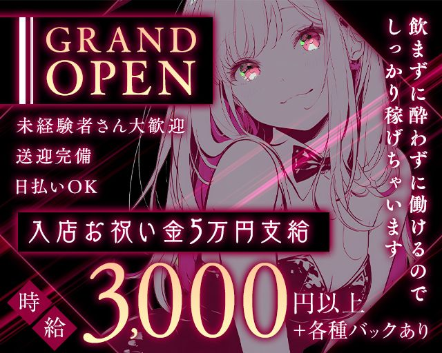
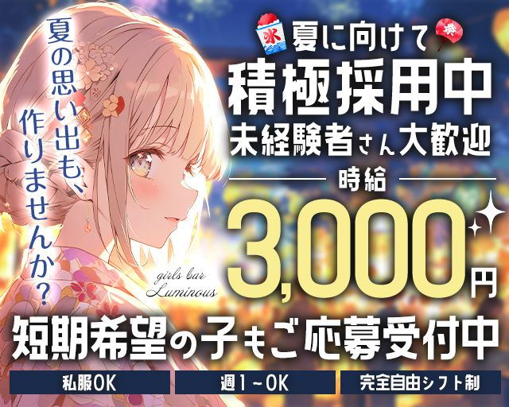
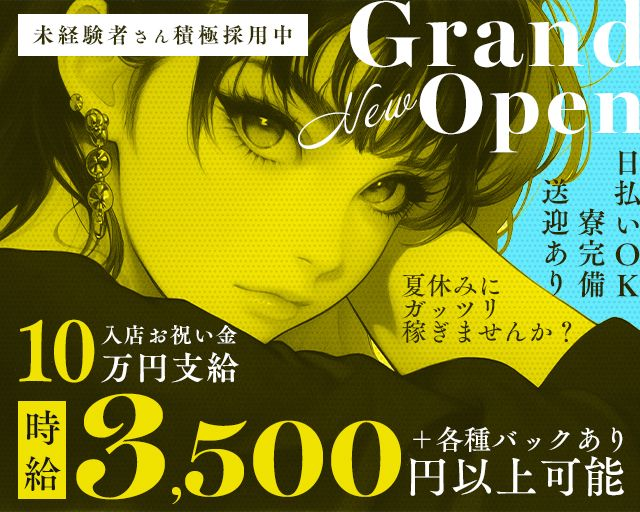
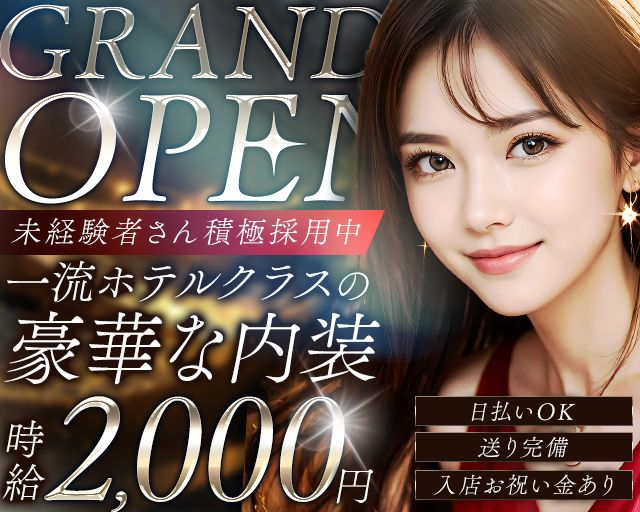
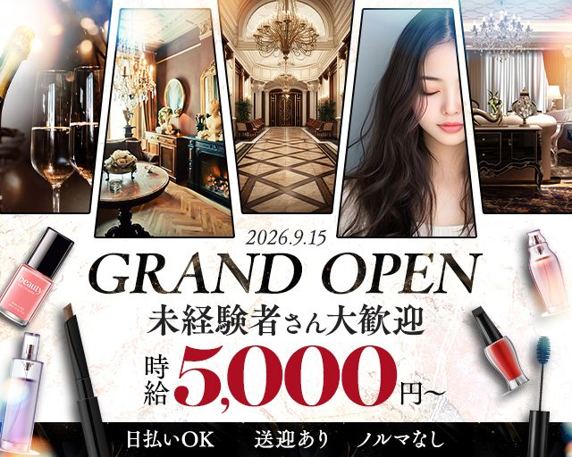

Web Banner
求人広告バナー制作
ナイトワーク求人媒体向けに、自主的に制作して提供したサンプルバナー6点です。 未経験歓迎・高時給・新店舗オープンなど、ターゲットと訴求軸を打ち分けたデザイン設計を意識しています。
制作プロセス(各バナー共通)
01
ターゲット確認
02
訴求軸の決定
03
情報優先順位の設計
04
素材選定・制作
05
確認・調整

モノクロ × AI生成ビジュアル
グラフィカルな文字組みでインパクトを出し、グランドオープンの新規性を前面に訴求。

アニメ調 × マゼンタ
「飲まずに働ける」という安心訴求でハードルを下げ、未経験層の応募を促進。

浴衣イラスト × 夏採用
季節感と短期OKの訴求を組み合わせ、夏だけ働きたい層にアプローチ。

水色 × 黄色(補色設計)
補色に近い配色でコントラストを最大化し、タイムライン上で目が止まる構造を意識。

実写風 × ホテル感
「一流ホテルクラス」のコピーと質感で、高級感と安心感を同時に訴求。

大理石 × コスメ × コラージュ
店内・人物・小物を合成し、女性らしさと高級感を両立させた構成。
制作の背景
「こういうサンプルがあれば営業が提案しやすくなる」と自分で考え、業務の傍ら自主的に制作して提供しました。 各バナーは「どの情報を最初に見せるか」の優先順位を決めてから制作を開始しており、 時給・新店舗・未経験歓迎のどれを前面に出すかでターゲットへの届き方が変わることを意識しています。 この「必要なものを自分で考えて動く」姿勢は、デザイナーとしてチームに加わったあとも変わらず活かしていきます。